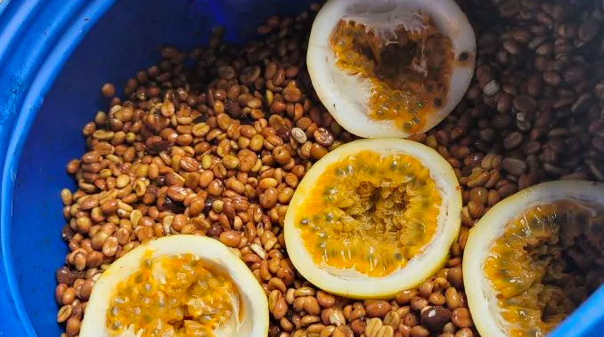

En un coup d'œil :
Process où on ajoute des fruits, fleurs ou végétaux dans la cuve avec les cerises de café. La fermentation se fait ensemble, permettant un transfert aromatique et microbien entre substrats. Résultat : profils exotiques et intenses (fruits tropicaux, floral, épices), complexité aromatique maximale. C'est le café "fusion", où on croise les univers sensoriels.
Comprendre : La fermentation croisée
Le principe de la co-fermentation
Définition simple :
On place des cerises de café + un substrat externe (fruits, fleurs, épices) dans la même cuve pendant la fermentation.
Ce qui se passe :
•Transfert microbien : les levures/bactéries du substrat migrent vers le café
•Transfert aromatique : les composés volatils du substrat imprègnent le café
•Fermentation synergique : les deux substrats se nourrissent mutuellement (sucres, acides, enzymes)
C'est exactement le principe de la bière fruitée (ajout de fruits pendant fermentation) ou des vins aromatisés.
Co-fermentation vs Infusion aromatique
| Critère | Co-fermentation | Infusion aromatique |
|---|---|---|
| Moment ajout | Pendant fermentation active | Après fermentation (café sec ou parche) |
| Fermentation du substrat | Oui (fermente avec café) | Non (juste trempage) |
| Transfert microbien | Oui (levures/bactéries migrent) | Non (pas d'activité biologique) |
| Profil aromatique | Intégré, complexe, métabolisé | Superficiel, artificiel |
| Résultat | Arômes transformés biologiquement | Arômes "plaqués" |
En clair : Co-fermentation = transformation biologique. Infusion = simple parfumage.
⚠️ Important : La co-fermentation est un process légitime et créatif, pas une "tricherie" comme l'infusion post-fermentation (qui est interdite en compétition SCA).
Les substrats utilisés
Fruits (les plus courants)
| Fruit | Profil apporté | Ratio recommandé |
|---|---|---|
| Ananas | Tropical, acidité vive, esters intenses | 10–20% poids café |
| Mangue | Tropical doux, sucré, texture | 15–25% |
| Fruits rouges (fraise, framboise) | Fruité rouge intense, acidité délicate | 10–15% |
| Banane | Doux, crémeux, isoamyl-acétate | 15–20% |
| Agrumes (citron, orange) | Acidité vive, terpènes (limonène) | 5–10% (écorces) |
| Fruit de la passion | Tropical acide, complexité | 10–15% |
| Papaye | Tropical doux, enzymatique | 15–20% |
Fleurs (aromatisation délicate)
| Fleur | Profil apporté | Ratio |
|---|---|---|
| Jasmin | Floral intense, linalol | 2–5% |
| Lavande | Floral herbacé, terpènes | 2–5% |
| Rose | Floral délicat, géraniol | 2–5% |
| Hibiscus | Floral acidulé, rouge | 5–10% |
| Fleur d'oranger | Floral doux, néroli | 2–5% |
Épices et autres (expérimental)
| Substrat | Profil apporté | Ratio |
|---|---|---|
| Cannelle | Épicé doux, aldéhydes | 1–3% |
| Gingembre | Épicé piquant, terpènes | 2–5% |
| Vanille (gousses) | Vanilline, doux | 1–3% |
| Cacao (fèves fermentées) | Chocolat, complexité | 5–10% |
| Miel | Sucrosité, texture | 5–10% poids |
Les 3 approches de co-fermentation
| Approche | Méthode | Profil | Difficulté |
|---|---|---|---|
| En cerises entières | Café + fruits entiers en cuve | Fruité intense, corps dense | ⭐⭐ Moyen |
| Dépulpé + fruits | Café dépulpé + fruits en cuve | ✅ Optimal : clarté + arômes | ⭐⭐⭐ Avancé |
| Anaérobie + fruits | Cuve scellée + CO₂ + fruits | Intensité maximale, contrôle | ⭐⭐⭐⭐ Expert |
Recommandation pour débuter : Dépulpé + fruits (10–15% ratio)
Maîtriser : Le protocole technique
Phase 1 : Récolte et préparation
Café :
•Cerises mûres (≥18 °Brix)
•Tri standard (flottaison + visuel)
•Dépulpage (recommandé) ou cerises entières
Substrat (fruits) : ⚠️ CRITIQUE : La qualité du substrat = qualité du résultat final
Sélection fruits :
•Maturité optimale : fruits mûrs mais pas surmûris (risque fermentation putride)
•Hygiène absolue : laver soigneusement (retirer pesticides, poussières)
•Pas de moisissures : inspecter visuellement, éliminer tout fruit abîmé
•Couper/écraser : augmenter surface contact (libération jus/arômes)
Test qualité substrat :
•Sentir : arôme net, fruité, pas fermenté
•Goûter : sucré, pas acide/amer
•Texture : chair ferme, pas molle/pourrie
Phase 2 : Calcul du ratio et mélange
Ratio substrat/café (en poids) :
| Intensité recherchée | Ratio fruits | Résultat |
|---|---|---|
| Subtile | 5–10% | Touche aromatique délicate |
| Équilibrée ✅ | 10–20% | Profil net mais intégré |
| Dominante | 20–30% | Arômes fruits très marqués |
| Extrême ⚠️ | >30% | Risque masquage café, artificial |
Recommandation : Commencer à 10–15%, ajuster selon résultats.
Exemple calcul :
•100 kg café dépulpé
•Ratio 15% ananas
•= 15 kg ananas frais (coupés en morceaux)
Phase 3 : Mise en cuve et environnement
Protocole :
•Placer le café (dépulpé ou cerises) dans la cuve
•Ajouter les fruits coupés en morceaux (2–5 cm)
•Mélanger délicatement pour répartir uniformément
•Fermer la cuve :
•Semi-hermétique (aération légère) : fermentation mixte aérobie/anaérobie
•Hermétique + valve : fermentation anaérobie (plus contrôlé)
•Installer thermomètre (suivi T° interne)
Environnement optimal :
| Paramètre | Valeur cible | Impact |
|---|---|---|
| Température | 18–24°C | Optimal activité microbienne |
| pH initial | 5,0–5,5 | Favorise levures + LAB |
| Ratio O₂ | Faible (cuve fermée) | Force fermentation alcoolique |
| Durée | 48–96h | Selon profil recherché |
Phase 4 : Fermentation synergique
Durée typique :
•Fruits charnus (ananas, mangue) : 48–72h
•Fruits rouges (fraise, framboise) : 36–60h
•Fleurs : 24–48h (plus délicat)
•Épices : 36–72h
Température cible :
| Plage T° | Profil | Risque |
|---|---|---|
| 18–22°C | ✅ Optimal : fruité intégré, équilibré | Faible |
| 22–26°C | Fruité intense, fermentation rapide | Moyen (risque sour) |
| >26°C | ❌ Risque volatile acidity, phenolic | Élevé |
Ce qui se passe biologiquement :
Phase 1 : Installation microbienne croisée (0–24h)
Du fruit vers le café :
•Levures du fruit (Saccharomyces, Pichia) colonisent le café
•Bactéries lactiques du fruit migrent
•Enzymes du fruit (pectinases, amylases) agissent sur le mucilage café
Du café vers le fruit :
•Levures du café colonisent le fruit
•Les deux substrats créent un écosystème microbien commun
Production initiale :
•CO₂ (respiration levures)
•Chaleur (+2–4°C)
•Début libération arômes fruits
Phase 2 : Fermentation active (24–72h)
Transformations biochimiques :
•Sucres du fruit → Éthanol + CO₂ + Esters
•Formation d'esters spécifiques au fruit ajouté
•Exemple ananas : éthyl-butanoate (ananas), éthyl-hexanoate (fruit tropical)
•Sucres du mucilage café → Alcools + Acides
•Fermentation classique du café continue
•Mais modifiée par les levures/enzymes du fruit
•Migration aromatique :
•Terpènes du fruit (limonène, linalol) → imprègnent grain café
•Esters formés → piégés dans matrice lipidique grain
•Composés volatils fruits → diffusent à travers parche
pH et acidité :
•pH descend : 5,0 → 3,8–4,5
•Acidité combinée (café + fruit) → profil unique
Phase 3 : Stabilisation (72–96h)
•Activité microbienne ralentit (sucres consommés)
•Profil aromatique se stabilise
•Équilibre café/fruit se fixe
Indicateurs visuels :
•Fruits partiellement décomposés (normal)
•Jus fruit + mucilage café = liquide épais, coloré
•Odeur : fruité intense + fermenté doux (pas vinaigre !)
Suivi de la fermentation :
| Paramètre | Début | Milieu (48h) | Fin |
|---|---|---|---|
| pH | 5,0–5,5 | 4,2–4,8 | 3,8–4,5 |
| T° interne | Ambiante | +3–5°C | Stable |
| Odeur | Fruit frais + café | Fruité fermenté intense | Signature fruits + café |
| Couleur liquide | Claire/rose | Rouge/orange (selon fruit) | Foncée, opaque |
Indicateurs de fin optimale :
•pH stabilisé 3,8–4,5
•Odeur : fruité fermenté net, pas vinaigre/putride
•Fruits décomposés mais pas moisis
•Goût liquide : sucré-acide fruité (pas piquant/aigre)
⚠️ Alerte défaut : Odeur vinaigre/swampy/phenolic → stopper immédiatement, lot compromis
Phase 5 : Séparation et lavage
Protocole :
•Drainer le liquide (jus fermenté café + fruits)
•Séparer physiquement les morceaux de fruits du café
•Tamis grossier ou grille
•Retirer tous les résidus de fruits
•Laver le café à l'eau claire abondamment
•Éliminer traces sucres/acides fruits
•Rincer jusqu'à eau claire
•Égoutter sur tables ou paniers
Liquide de fermentation :
•Option A : Jeter (sécuritaire)
•Option B : Conserver pour backslopping (réensemencer lot futur)
•Option C : Distiller en "eau de café" aromatique (expérimental)
Phase 6 : Séchage post-co-fermentation
Important : Grain chargé en sucres résiduels du fruit → séchage doux pour éviter caramélisation excessive.
Paramètres :
| Phase | Durée | T° max | Brassage |
|---|---|---|---|
| Initiale | 3–4 j | 28°C | 5–6×/jour |
| Intermédiaire | 4–6 j | 32°C | 4×/jour |
| Finale | 3–5 j | 35°C | 2×/jour |
Vitesse : <1,0% H₂O/jour (lent, comme Natural)
Méthode : Lits africains sous ombre partielle (éviter soleil direct = perte arômes volatils fruits)
Phase 7 : Repos en parche (critique)
Durée : 6–10 semaines (plus long que lavé standard)
Pourquoi c'est crucial :
Les arômes du fruit sont très volatils (esters légers, terpènes). Le repos permet :
•Polymérisation dans matrice lipidique grain → fixation arômes
•Maturation profil café + fruit → intégration harmonieuse
•Évaporation composés indésirables (notes fermentées trop agressives)
Évolution typique :
•Semaine 0–2 : Fruit dominant, profil cru
•Semaine 4–6 : Équilibre café/fruit émerge
•Semaine 8–10 : ✅ Profil optimal : fruit intégré, complexité maximale
Test de patience : Co-fermentation torréfiée à J+7 vs J+60 = 2 cafés différents (le second sublime).
Approfondir : Chimie et profils hybrides
Molécules transférées selon fruits
Ananas → Café
| Molécule origine ananas | Arôme | Concentration finale café |
|---|---|---|
| Éthyl-butanoate | Ananas, mangue | Très élevée (×10) |
| Éthyl-hexanoate | Fruit tropical | Élevée (×5) |
| Furaneol | Fraise, ananas | Élevée |
| Acide malique | Acidité vive | Moyenne |
Profil en tasse : Explosion tropicale (ananas dominant), acidité vive, texture juteuse
Fruits rouges (fraise, framboise) → Café
| Molécule | Arôme | Concentration |
|---|---|---|
| Furaneol | Fraise, caramel | Très élevée |
| Acétate d'éthyle | Fruit fermenté doux | Élevée |
| Linalol (traces fraise) | Floral délicat | Moyenne |
Profil en tasse : Fruits rouges intenses, douceur confiture, texture veloutée
Mangue → Café
| Molécule | Arôme | Concentration |
|---|---|---|
| Myrcène | Tropical, résine douce | Élevée |
| Limonène | Agrume doux | Moyenne |
| Lactones | Pêche, abricot | Élevée |
Profil en tasse : Tropical doux (mangue mûre), texture crémeuse, sucrosité
Jasmin → Café
| Molécule | Arôme | Concentration |
|---|---|---|
| Linalol | Jasmin, lavande | Très élevée |
| Acétate de benzyle | Jasmin intense | Élevée |
| Indole (faible) | Floral animal | Traces |
Profil en tasse : Explosion florale (jasmin dominant), texture légère, acidité douce
Profil sensoriel — La fusion aromatique
| Attribut | Anaérobie simple | Natural | Co-fermentation |
|---|---|---|---|
| Intensité spécifique | ⭐⭐⭐⭐ | ⭐⭐⭐⭐⭐ | ⭐⭐⭐⭐⭐ |
| Reconnaissance fruit | ⭐⭐ | ⭐⭐⭐ | ⭐⭐⭐⭐⭐ |
| Complexité | ⭐⭐⭐⭐ | ⭐⭐⭐⭐ | ⭐⭐⭐⭐⭐ |
| Intégration | ⭐⭐⭐⭐ | ⭐⭐⭐⭐ | ⭐⭐⭐⭐ |
| Surprise/Wow | ⭐⭐⭐ | ⭐⭐⭐⭐ | ⭐⭐⭐⭐⭐ |
Descripteurs typiques d'une bonne co-fermentation :
•Fruit reconnaissable mais intégré (pas artificiel)
•Complexité multicouche : café + fruit + fermentation
•Acidité hybride : café + acidité fruit
•Texture enrichie : corps du café + sucrosité fruit
•Finale longue : persistance aromatique fruit + café
En tasse, une bonne co-fermentation doit : Surprendre ("c'est quoi ce fruit ?!") tout en restant clairement identifiable comme café.
En pratique : Roast tips pour Co-fermentation
Comportement du grain
Particularité : Concentration élevée de sucres résiduels du fruit + esters volatils du fruit.
Conséquence : Torréfaction douce et progressive pour révéler le fruit sans le caraméliser excessivement.
Profil recommandé (base Loring)
Charge : 188–193°C (plus basse, selon fruit)
↓
Drying : 5–6 min, ROR 18–22°C/min très progressif
→ évaporer eau SANS volatiliser esters fruits
↓
Maillard : 25–30%, ROR 10–12°C/min constant
→ développer structure SANS masquer fruit
↓
Premier Crack : 196–200°C
↓
Développement : 10–13% (court-moyen)
→ ROR 6–8°C/min, descente rapide post-1C
↓
Drop : selon fruit (voir ci-dessous)
Adaptation selon substrat
| Substrat co-fermenté | Drop | Développement | Objectif |
|---|---|---|---|
| Ananas/tropical | 198–202°C | 10–12% | Préserver acidité vive + fruité explosif |
| Fruits rouges | 200–203°C | 11–13% | Équilibre fruité + douceur |
| Fleurs (jasmin, rose) | 196–200°C | 10–11% | Préserver floral délicat |
| Mangue/doux | 202–205°C | 12–13% | Texture veloutée + tropical doux |
Erreurs fréquentes
| Erreur | Symptôme | Correction |
|---|---|---|
| Drop trop tardif | Fruit caramélisé, devient artificial | Drop <203°C |
| Charge trop chaude | Esters fruits brûlés instantanément | Baisser 188–193°C |
| Maillard trop long | Fruit masqué par torréfaction | Réduire 25–30% |
| Développement trop long | Fruit "cuit", perd fraîcheur | Court 10–13% |
Point clé : En co-fermentation, le fruit doit rester reconnaissable. Si ça devient "generique fruité", c'est raté.
Les risques et défauts de la Co-fermentation
Défauts liés au process
| Défaut | Cause | Molécules | Notes | Prévention |
|---|---|---|---|---|
| Artificial (artificiel) | Ratio fruit >30% ou infusion post | Dominance fruit, pas intégré | Goût sirop, bonbon | Ratio 10–20% max |
| Phenolic | Fruits moisis ou contamination | Crésols, guaiacol | Médicinal, chimique | Hygiène fruits absolue |
| Swampy | Fruits surmûris ou T° >26°C | Acide butyrique, soufrés | Marécage, putride | Fruits mûrs pas surmûris, T° 18–24°C |
| Sour | Fermentation trop longue (>96h) | Acide acétique | Vinaigre, piquant | Stopper pH 3,8–4,5 |
| Masquage café | Ratio fruit excessif | — | Jus de fruit, pas café | Ratio <25% |
Défauts liés à la torréfaction
| Défaut | Cause roast | Impact |
|---|---|---|
| Fruit brûlé | Charge trop chaude ou drop tardif | Caramel brûlé, artificial |
| Fruit masqué | Maillard trop long | Perte signature co-fermentation |
| Déséquilibré | Développement inadapté | Fruit présent mais mal intégré |
Conclusion : La Co-fermentation comme création sensorielle
La co-fermentation incarne la liberté créative absolue du café moderne.
Ce qu'elle apporte :
•Innovation sensorielle illimitée (milliers de combinaisons possibles)
•Profils hybrides uniques (café-ananas, café-jasmin, etc.)
•Complexité aromatique maximale (3 couches : café + fruit + fermentation)
•Expérience "wow" garantie en dégustation
•Différenciation commerciale forte (signature reconnaissable)
Ce que cela coûte :
•Coût fruits : 50–200€/lot selon fruits exotiques/locaux
•Savoir-faire technique : ratio, timing, hygiène fruits
•Risque profil "artificial" si mal exécuté
•Controverse éthique : est-ce encore du "café" ? (débat dans la communauté)
•Torréfaction délicate : moindre erreur = perte signature
Comment cela fonctionne, en résumé : Cerises café (ou dépulpé) → sélection fruits mûrs + hygiène → calcul ratio 10–20% → mélange en cuve → fermentation synergique 48–72h à 18–24°C → levures/enzymes fruits transforment sucres → migration aromatique vers grain café → séparation fruits → lavage → séchage doux (ombre) → repos 8–10 semaines (fixation arômes) → torréfaction délicate <203°C.
Les résultats obtenus : Un café spectaculaire, polarisant, mémorable. Si ananas : explosion tropicale (ananas reconnaissable), acidité vive, texture juteuse. Si jasmin : floral intense (jasmin dominant), élégance, légèreté. Si fruits rouges : confiture, douceur veloutée. Score typique : 87–91 points (excellent si bien exécuté). Idéal pour compétitions, showcases, clientèle aventureuse. À éviter pour clientèle traditionnelle ou recherche "pureté terroir".
Pour aller plus loin
Process connexes :
•Chapitre Process → Anaérobie : fermentation sans ajout substrat
•Chapitre Process → Levures sélectionnées : inoculation microbienne ciblée
•Chapitre Process → Infusion aromatique : parfumage post-fermentation (différent !)
Défauts :
•Chapitre Défauts → Artificial, Phenolic, Swampy, Over-fermentation
Chimie :
•Chapitre Chimie → Transfert aromatique entre substrats
•Chapitre Chimie → Esters spécifiques fruits (éthyl-butanoate, furaneol)
Éthique et débat :
•Débat communauté : co-fermentation = innovation légitime ou adultération ?
•Position SCA : autorisé en compétition SI fermentation biologique (pas infusion post)
💡 Note de formation : La co-fermentation est le process le plus controversé du café moderne. Enseignez qu'il y a une ligne éthique claire : fermentation biologique simultanée (co-fermentation) = légitime et intéréssante. Infusion post-fermentation (trempage café sec dans jus) = adultération et possible “tricherie”. La différence ? La transformation biologique. En co-fermentation, les levures/enzymes TRANSFORMENT les arômes (métabolisme), créant des molécules nouvelles. En infusion, on plaque juste des arômes existants (artificiel). C'est comme la différence entre faire une bière fruitée (co-fermentation, transformation) vs ajouter du sirop dans une bière finie (artificiel). En formation, utilisez la co-fermentation pour enseigner la créativité encadrée : oui à l'innovation, non à la tromperie. Montrez que les meilleurs co-fermentés gardent 60% café, 40% fruit → le café doit rester reconnaissable. Si c'est 90% fruit, ce n'est plus du café, c'est du jus fermenté avec des grains dedans.